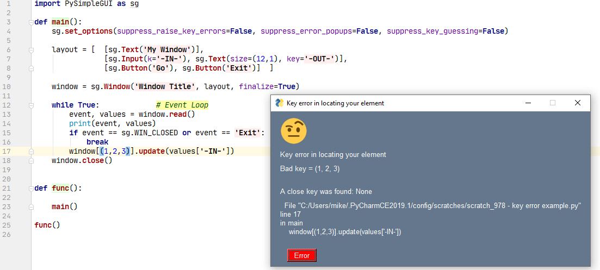

Error Handling
Error handling in PySimpleGUI is performed a little differently than the way console applications are handled. If you use .pyw files or launch your application without a console, the user experiences a window that disappears when an exception occurs in Python. A console application would show a traceback.
Errors During Development
You're most likely to experience errors while developing your code. It's assumed you're using an IDE which means you will see a traceback if your program crashes.
PySimpleGUI Detected Errors
If an error happens that PySimpleGUI is able to detect, then it tries to handle it in a way that will give as pleasant of an experience as possible while being informative too.
I think we can all agree that errors are not "fun". Debugging can be satisfying / rewarding, but "fun" isn't a term typically associated with errors.
The standard PySimpleGUI Error window looks like this:

You're told the file, line number, and an error message. Additionally, you're given 3 options on how you want to handle this error.
- Close - Close the error display window and continue execution of your code
- Take me to error - Opens your editor to the file and line number shown in the error, assuming you've configured an editor in your PySimpleGUI system settings
- Kill Application - Exits the application immediately
Key Errors
Key errors are one of the most common errors to encounter while initially developing your application. PySimpleGUI attempts to "recover" from this error so that you can continue running your application.
Key Errors - Key error recovery algorithm
In the primary (tkinter) port of PySimpleGUI, there are 3 controls over key error handling and a whole new era of key reporting.
You can modify these values by calling set_options.
sg.set_options(suppress_raise_key_errors=False, suppress_error_popups=False, suppress_key_guessing=False)
A basic definition of them are:
suppress_error_popups- Disables error popups that are generated within PySimpleGUI itself to not be shownsuppress_raise_key_errors- Disables raising a key error if a key or a close match are not foundsuppress_key_guessing- Disables the key guessing algorithm should you have a key error
With the defaults left as defined (all False), here is how key errors work.
This is the program being used in this example:
import PySimpleGUI as sg
def main():
sg.set_options(suppress_raise_key_errors=False, suppress_error_popups=False, suppress_key_guessing=False)
layout = [ [sg.Text('My Window')],
[sg.Input(k='-IN-'), sg.Text(size=(12,1), key='-OUT-')],
[sg.Button('Go'), sg.Button('Exit')] ]
window = sg.Window('Window Title', layout, finalize=True)
while True: # Event Loop
event, values = window.read()
print(event, values)
if event == sg.WIN_CLOSED or event == 'Exit':
break
window['-O U T'].update(values['-IN-'])
window.close()
def func():
main()
func()
A few things to note about it:
- There are multiple levels of functions being called, not just a flat program
- There are 2 keys explicitly defined, both are text at this point (we'll change them later)
- There are 2 lookups happening, one with
windowthe other withvalues
This key error recovery algorithm only applies to element keys being used to lookup keys inside of windows. The values key lookup is a plain dictionary and so nothing fancy is done for that lookup.
Example 1 - Simple text string misspelling
In our example, this line of code has an error:
There are multiple problems with the key '-OUT-'. It is missing a dash and it has a bunch of extra spaces.
When the program runs, you'll first see the layout with no apparent problems:

Clicking the OK button will cause the program to return from window.read() and thus hit our bad key. The result will be a popup window that resembles this:

Note a few things about this error popup. Your shown your bad key and you're also shown what you likely meant. Additionally, you're shown the filename, the line number and the line of code itself that has the error.
Because this error was recoverable, the program continues to run after you close the error popup. The result is what you expect from this program... the output field is the same as your information input.

Example 2 - No close match found
In this example, as you can see in the error popup, there was such a mismatch that no substitution could be performed.

This is an unrecoverable error, so a key error exception is raised.
Traceback (most recent call last):
File "C:/Users/mike/.PyCharmCE2019.1/config/scratches/scratch_978 - key error example.py", line 25, in <module>
func()
File "C:/Users/mike/.PyCharmCE2019.1/config/scratches/scratch_978 - key error example.py", line 23, in func
main()
File "C:/Users/mike/.PyCharmCE2019.1/config/scratches/scratch_978 - key error example.py", line 17, in main
window[(1,2,3)].update(values['-IN-'])
File "C:\Python\PycharmProjects\PSG\PySimpleGUI.py", line 8591, in __getitem__
return self.FindElement(key)
File "C:\Python\PycharmProjects\PSG\PySimpleGUI.py", line 7709, in FindElement
raise KeyError(key)
KeyError: (1, 2, 3)
If you're running an IDE such as PyCharm, you can use the information from the assert to jump to the line of code in your IDE based on the crash data provided.
Choose Your Desired Combination
There are enough controls on this error handling that you can control how you want your program to fail. If you don't want any popups, and no guessing and would instead like to simply get an exception when the key error happens, then call set_options with this combination:
sg.set_options(suppress_raise_key_errors=False, suppress_error_popups=True, suppress_key_guessing=True)
This will cause Example #1 above to immediately get an exception when hitting the statement with the error. Even though the guessing is turned off, you're still provided with the closest match to help with your debugging....
** Error looking up your element using the key: -O U T The closest matching key: -OUT-
Traceback (most recent call last):
File "C:/Users/mike/.PyCharmCE2019.1/config/scratches/scratch_978 - key error example.py", line 25, in <module>
func()
File "C:/Users/mike/.PyCharmCE2019.1/config/scratches/scratch_978 - key error example.py", line 23, in func
main()
File "C:/Users/mike/.PyCharmCE2019.1/config/scratches/scratch_978 - key error example.py", line 17, in main
window['-O U T'].update(values['-IN-'])
File "C:\Python\PycharmProjects\PSG\PySimpleGUI.py", line 8591, in __getitem__
return self.FindElement(key)
File "C:\Python\PycharmProjects\PSG\PySimpleGUI.py", line 7709, in FindElement
raise KeyError(key)
KeyError: '-O U T'
Using popup_error_with_traceback
You can add these error popups to your code to aid in your debugging. The function popup_error_with_traceback displays an error message and an emoji or image of your choice. If you don't want an emoji/image, then you can use the parameter emoji=sg.BLANK_BASE64 and no image will be shown.
Like other popups, you can include a variable number of arguments that will be displayed in the window. If one of those items is the exception information, then PySimpleGUI will be parse the exception information and display it in a way that helps you find the file and line number of the error.
Your program doesn't have to be a PySimpleGUI program or have a PySimpleGUI Window open in order to use this call. If you are writing an application, that has no console, by design, then this is an easy way to display error information to your user. Even if the application is not running on your development machine, your user can take a screenshot and send you error information that will help you debug the problem.
import PySimpleGUI as sg
try:
a = 1/0
except Exception as e:
sg.popup_error_with_traceback('Error in the event loop', e, emoji=sg.EMOJI_BASE64_SCREAM)
Executing this code immediately shows this window:

Clicking "Take me to error" will open your editor to the line of code that called the popup function. The additional information in the window provides the details of the exact location of the error. This information is parsed from the exception details that was passed into the popup as the variable e. It indicates that on line 4 a division by zero error has occurred.